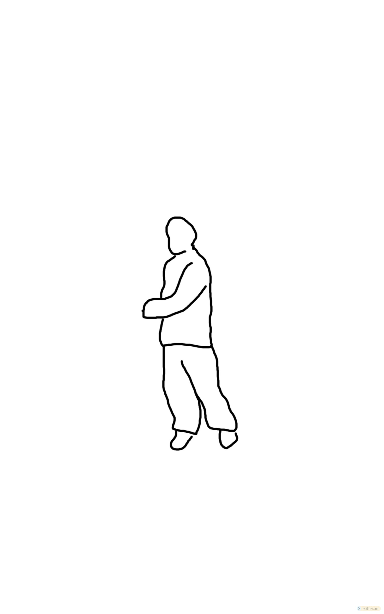
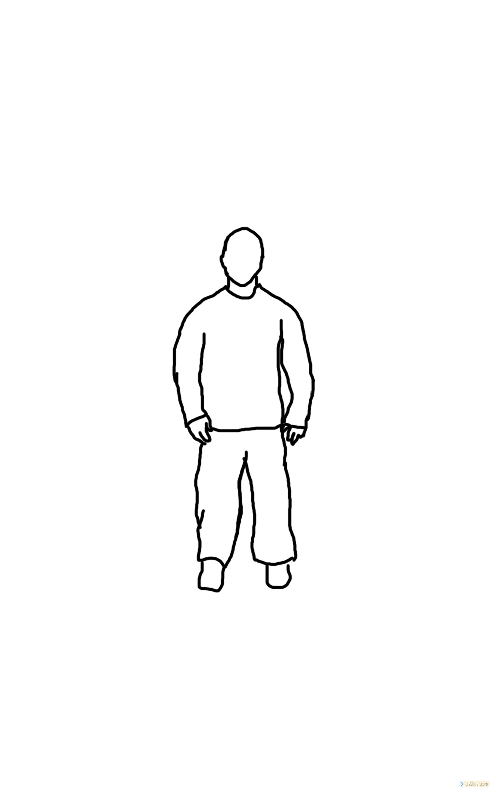
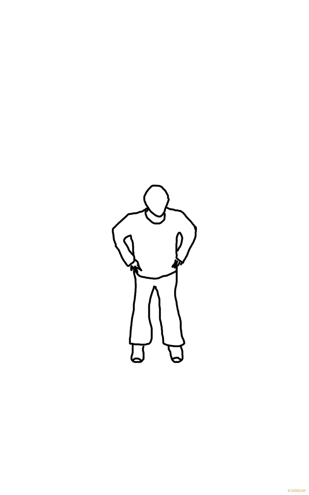
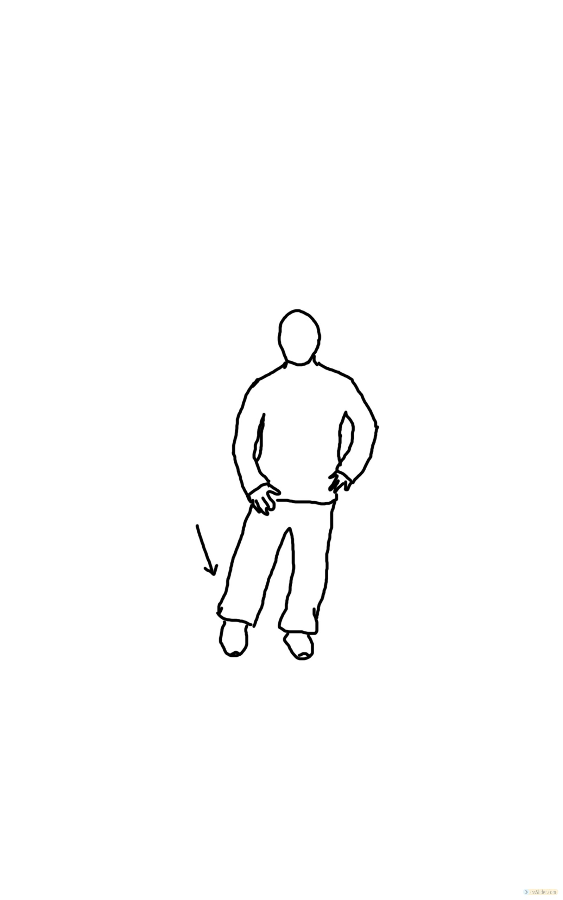
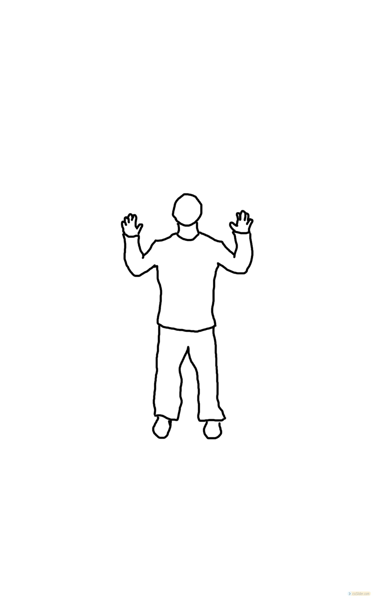
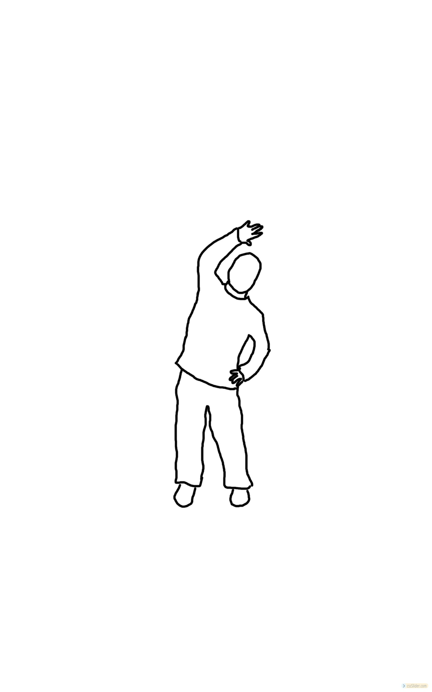
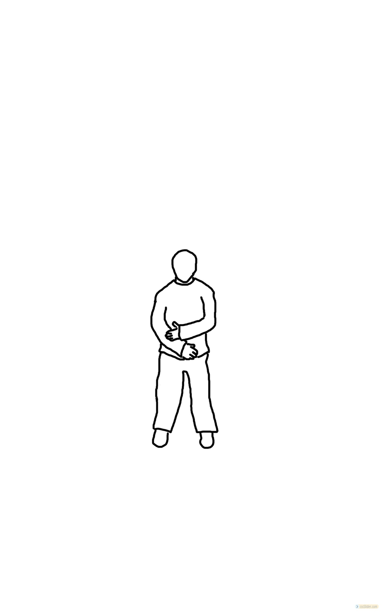
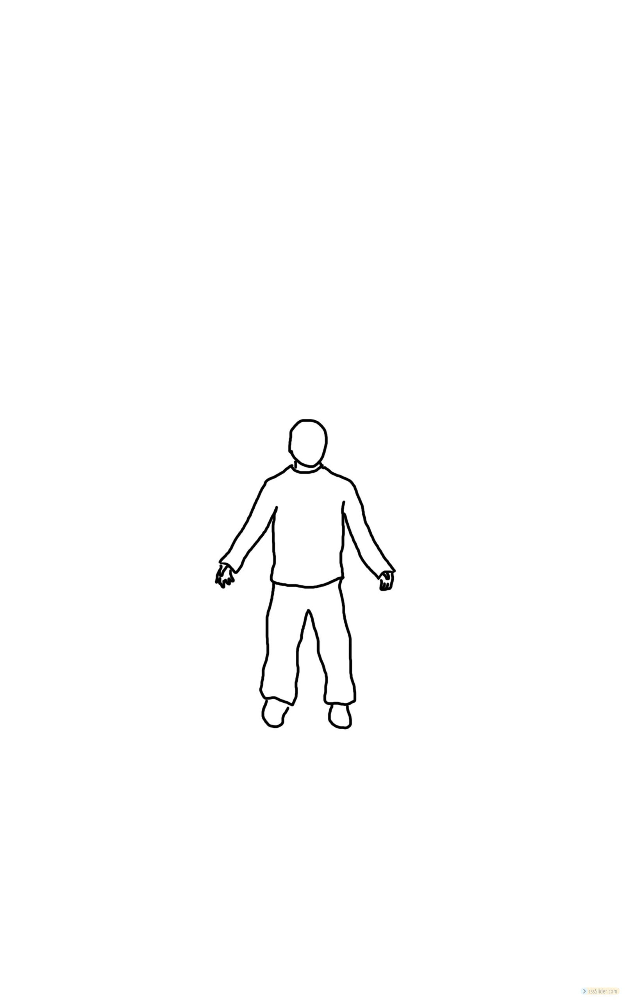
http://cssslider.com
by cssSlider.com v2.1m
Standing Warm Up
Standing Meditation
Swinging to connect kidneys and lungs
Hip Circles
Spiraling The Lower Extremities
Spinal Cord Breathing
Stertching to open the flanks
The Fountain
Washing With Qi From The Heavens
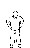
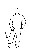
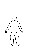